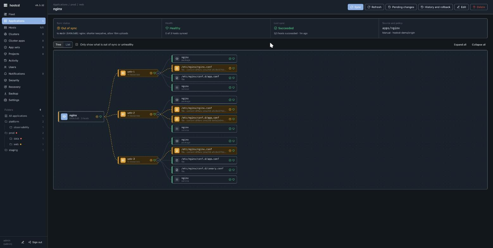

hostcd — core concepts
Application
An application is the unit of reconciliation. It has:
- a source: a Git repo URL, a branch (
targetRevision), and a path (folder) inside it; - a destination: the hosts it targets, by name or by label selector (e.g.
role=web, env=prod); - a sync policy:
automated(apply automatically) andselfHeal(revert manual changes) andprune(remove resources dropped from Git).
The folder contains manifests describing desired system state. hostcd renders them per host and reconciles.
Resource kinds
A manifest declares resources. The system kinds include packages, files (static or Go-templated), services, users, groups, directories, symlinks, cron jobs, sysctl settings, mounts, apt repositories, ufw rules, and nvidia_gpu (GPU bare-metal: the NVIDIA datacenter driver, the DCGM host engine, and the DCGM Prometheus exporter on :9400, from one resource). Templated files use host facts (.Hostname, .OSID, .OSVersion, .OSFamily) and labels (.Labels.<key>), and a notify: on a file restarts a service when the file changes.

Sync, drift, and self-heal
- Drift is any difference between the rendered desired state and what is on a host. hostcd surfaces it as Out of sync with a per-resource diff — the preview.
- Sync applies the desired state. It can be manual (an explicit operation) or automated.
- Self-heal re-applies desired state when a host drifts (e.g. someone edits a managed file by hand), so the host returns to what Git says.
Every sync is recorded in history, and any past revision can be restored with rollback (automated sync is disabled during a rollback so it is not immediately re-applied).
Hosts and the fleet
A host is a machine running the agent. Hosts carry labels that application selectors match on. The Fleet view summarises hosts, applications, and what needs attention; the Hosts view lists every host with its labels, targeting apps, sync/health, agent version, and last check-in. A host is considered offline after it stops reporting for 90 seconds.
Projects and approval gates (Team)
A project is a guard rail around a set of applications: it can restrict which source repos and destinations are allowed, define sync windows, and require approval. When a project requires approval, a sync (or rollback) of its apps is not applied automatically — it becomes a pending request that a different admin must approve. This gives a two-person rule for production changes; drift is still shown while a change waits.
Notifications (Team)
hostcd can POST events to webhooks (JSON, or a Slack-shaped body), optionally signed with an HMAC secret and filtered by event type. Events include app-sync-failed / app-sync-succeeded, host-offline / host-online, app-pending-approval, and the cluster/app-set equivalents. Delivery fires on a change to a noteworthy terminal state, so a long deploy does not flap.
Audit (Team)
Every operator action is recorded in an in-memory audit trail (the server log keeps a durable copy). The audit sink ships those events to an HTTP endpoint with retry and a persisted delivery cursor, so after a server restart delivery resumes exactly where it left off — no re-sends and no gaps.
Next: install · operations · security.
This page is also available as Markdown, indexed in llms.txt for AI assistants.